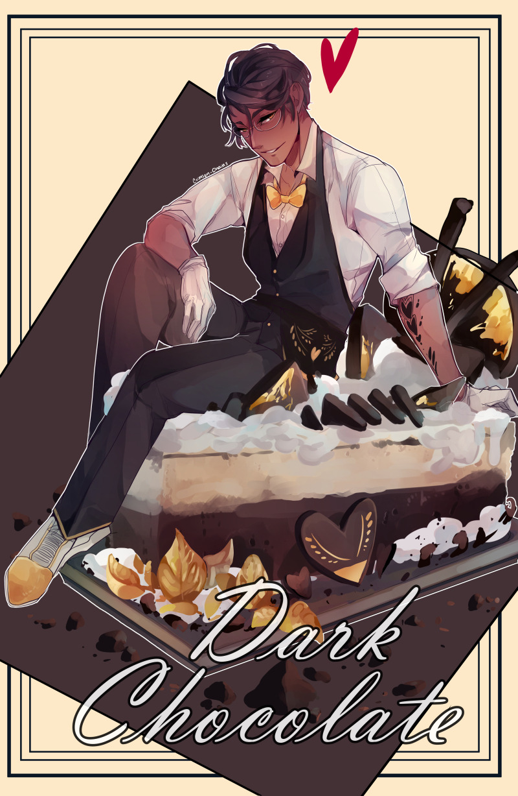
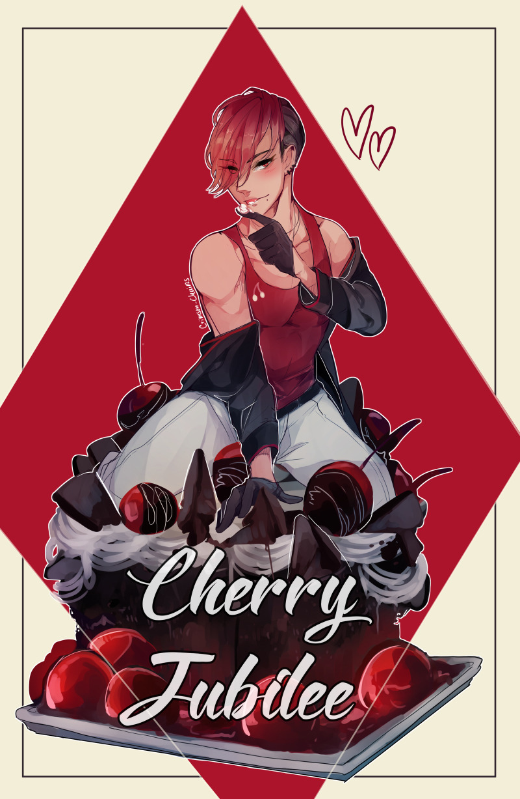
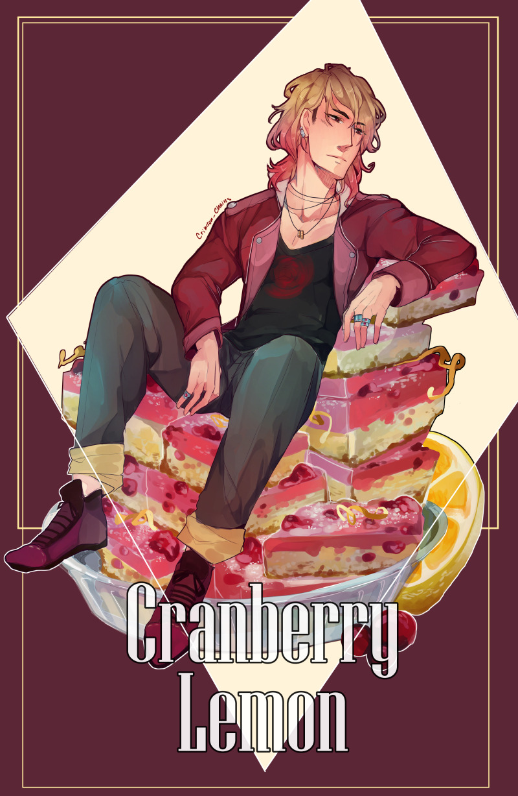
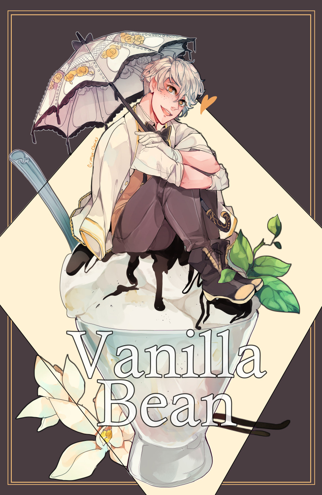

It started with an idea, if desserts were people, what would they look like? Magic happened and the Sweet Bois were born.
The Original 4




Age: 26
Height: 6'0"
Relationship Status: Dating Merlot
Owner of the Sweets Cafe. A general put together and competent man, he's easily persuadedto mischief and can be an enabler.
Likes: Lattes, games, being needed
Dislikes: Shellfish, contact lenses.